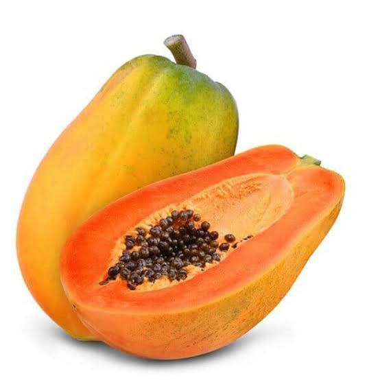

Papaya

| Index |
|---|
| Short description |
| Nutritional value |
| Health benefits |
| Best time to eat |
| Who shoud avoid |
| Fun fact |
Short Description
Papaya is a tropical fruit with soft orange flesh and black seeds. It is widely known for its digestive benefits and is eaten fresh or used in juices.
Nutritional Value
| Nutrient | Amount |
|---|---|
| Calories | 43 kcal |
| Carbohydrates | 11 g |
| Dietary Fiber | 1.7 g |
| Vitamin C | 75% |
| Vitamin A | 22% |
| Enzyme Papain | Present |
Health Benefits
- Improves digestion strongly
- Prevents constipation
- Boosts immunity
- Supports skin health
- Helps weight management
Best Time to Eat
Papaya is best eaten in the morning on an empty stomach.It cleans the digestive system and improves bowel movement.
Avoid eating papaya:
- With heavy meals
- At night
Who Should Avoid
- Pregnant women, especially raw papaya
- People with latex allergy
- Those with loose motion, if eaten in excess
Fun Fact
- Papaya contains papain, a powerful digestive enzyme
- Papaya seeds are edible and medicinal
- Papaya is used in meat tenderizers